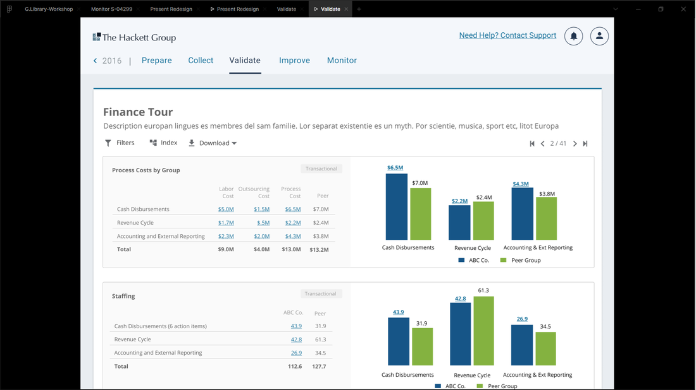

Gastón Pillet
Product Designer

The Hackett Group is an enterprise benchmarking platform that measures performance excellence, accelerates business transformation, and uncovers breakthrough business insights for Fortune 500 companies. The platform processes over 15,000 financial and operational metrics to help organizations compare their performance against industry peers and best-in-class performers.
Senior finance executives were drowning in data but starving for insights. Despite having access to comprehensive benchmarking data across 15,000+ metrics, users couldn't efficiently compare performance indicators, switch between metric panels, or identify actionable insights within reasonable timeframes.
Key Issues Identified:
Working within an agile environment for The Hackett Group client, I conducted comprehensive user research to understand the complex needs of finance executives and data collectors.
I conducted stakeholder interviews with the CTO and CEO, followed by extensive user interviews with finance team members and data collectors to understand their workflows, pain points, and time constraints.

Collaborative research and stakeholder interviews with The Hackett Group finance teams.
The redesign addressed four main challenges. First, Time-Constrained Users (like senior executives) needed fast answers without getting lost in menus. Second, users required better Comparative Analysis tools to view metrics side-by-side for decision-making. The system also had to handle Complex User Roles, giving specific access to different teams. Finally, we needed to add context to the data, helping users focus on the critical Excellence Quadrant metrics.
I created user journeys and user flows mapping core functionalities, and developed user personas for different roles (Data Collectors, Finance Managers, Executives) to understand how each would complete tasks and what information they needed along the way.
I facilitated collaborative sessions with the 10-member team using Whimsical boards to create flowcharts and user stories. Rapidly iterated on concepts through sketching, wireframing, and functional mockups in Figma.

User journey mapping core functionalities and roles within The Hackett Group platform.
Because users struggled to compare data in the old interface, I designed a flexible grid dashboard that displays multiple metric panels side-by-side. I also added a quick-switch feature, allowing users to toggle between different views instantly without losing their context.
Flexible panel system allowing 2-4 metrics displayed simultaneously for direct comparison
One-click metric switching without page reloads or lost context
Users could save and recall preferred metric combinations for recurring analysis
With 15,000+ metrics, users struggled to find the data that mattered most. I established a clear visual hierarchy using color-coded tiers and trend arrows for quick scanning. I also designed specific indicators for the Excellence Quadrant, helping users instantly focus on high-impact areas where they outperform their peers.

Design system and visual hierarchy for The Hackett Group benchmarking dashboard.
Raw numbers lack meaning without context, so I integrated industry benchmarks directly into each panel. This shows users exactly how they rank against peers and best-in-class performers. During development, we realized new users needed help. I designed an onboarding tour to guide them. I also proposed and built a Presentation Mode, allowing executives to turn dashboard data into slide-based reports instantly.
I conducted A/B testing and used Microsoft Clarity heatmaps to see exactly how users interacted with the dashboard. I also brought dynamic mockups to client meetings to test and refine our decisions in real-time. This process ensured the final design met the client's needs within the proposed timeframe.

Heatmap analysis from Microsoft Clarity showing user interaction patterns on the dashboard.
The redesign transformed how executives work by allowing them to identify strategic opportunities in real-time. Clear indicators for the Excellence Quadrant help teams focus on high-impact areas, while improved data democratization ensures users only see the information relevant to their specific role. I also added built-in presentation capabilities to save hours of manual reporting, all built on a scalable design system that allows the platform to grow easily.

Final benchmarking dashboard featuring multi-panel comparison and excellence indicators.
The redesigned benchmarking platform transformed how finance executives accessed and utilized performance data:
Senior executives reduced time spent on metric analysis from hours to minutes, enabling faster strategic decision-making and improved competitive positioning.
Metrics made accessible through intuitive navigation and comparison tools
Metric switching and comparison workflow compared to the legacy system
Designing this data-intensive platform taught me that context is king; numbers are only useful when compared to benchmarks. We created a flexible architecture to support everyone from Data Collectors to Executives. Using Figma allowed us to catch mistakes early, while the Agile methodology gave us the freedom to adapt the timeline to include high-value features.
I'd be happy to discuss how data-driven design and user-centered methodology can transform complex enterprise platforms.